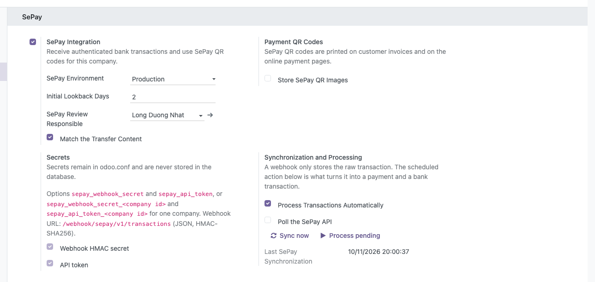
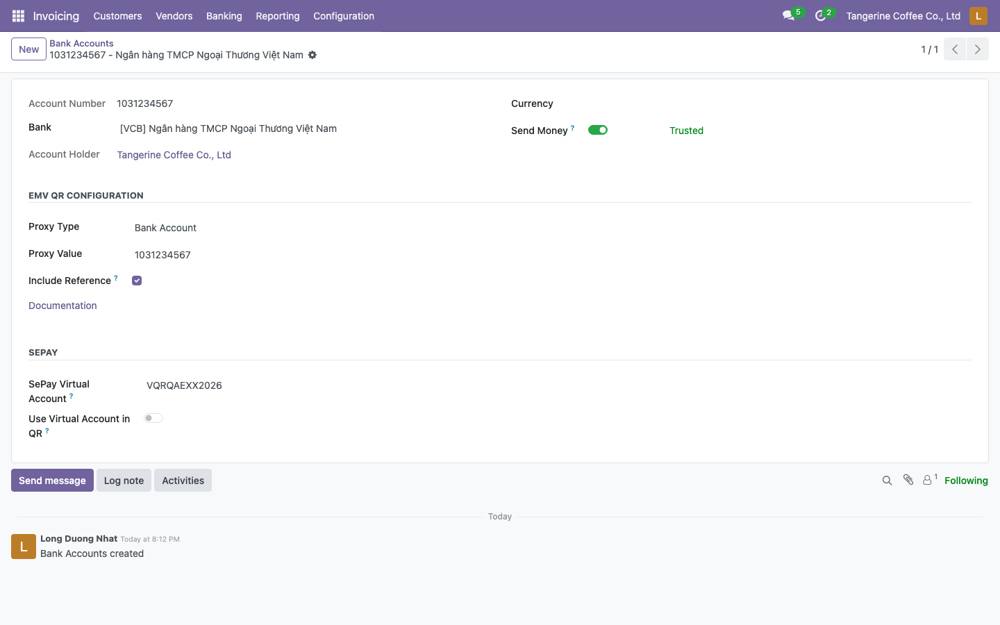
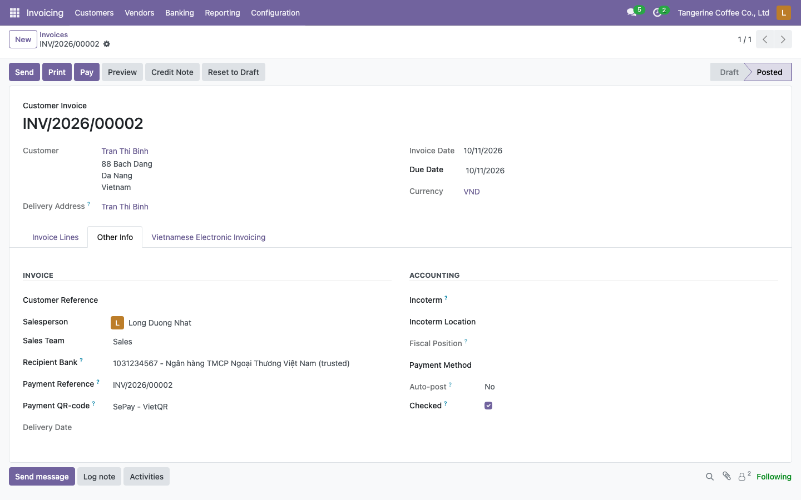
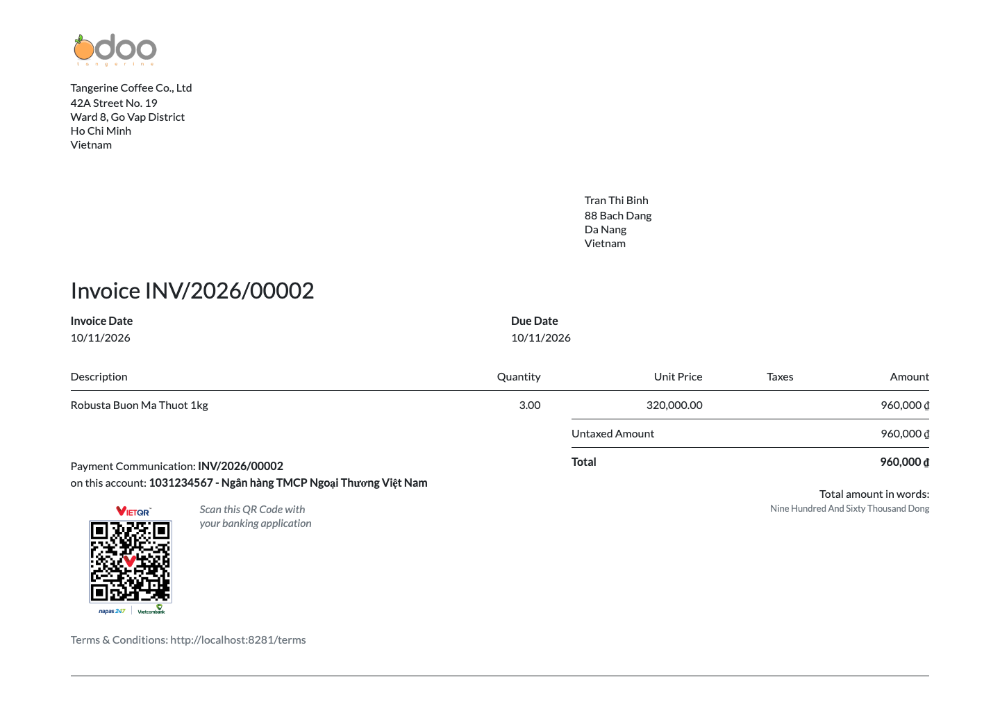
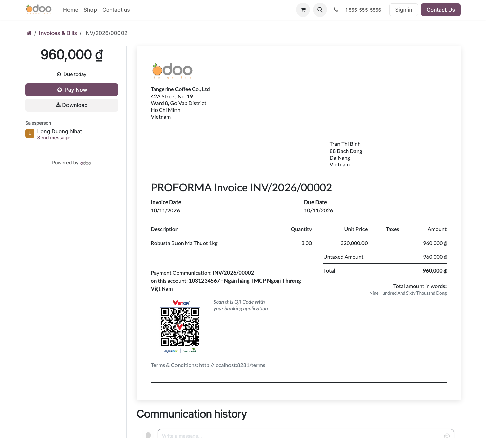
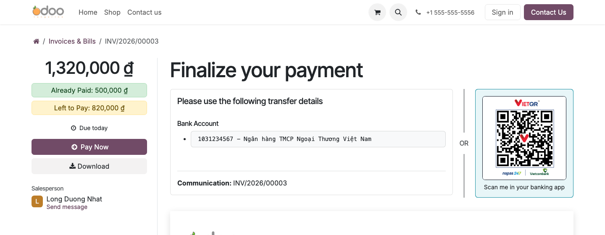
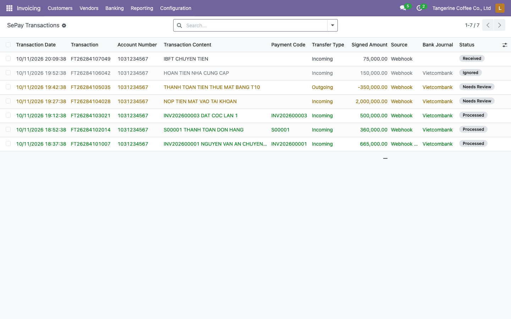
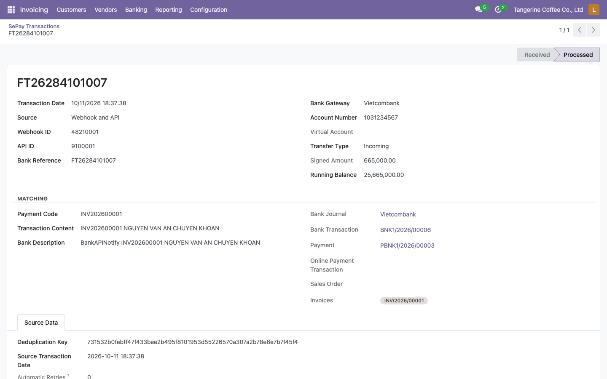
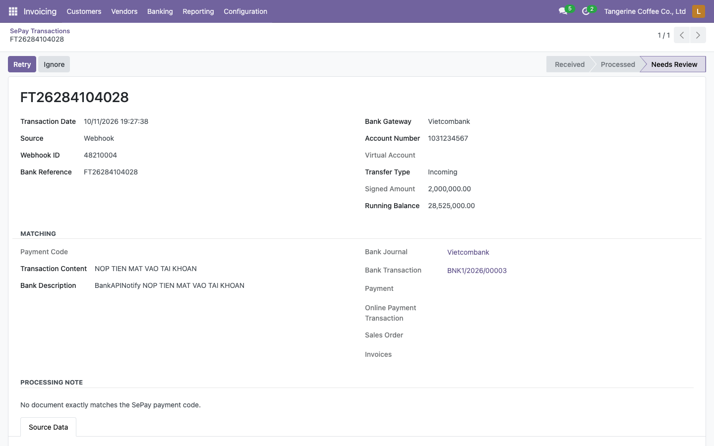

Receive Vietnamese bank transfers through SePay, record the payments and reconcile the bank statement automatically. Print SePay VietQR codes on invoices and on the online payment pages.
Use discount code EYVR1SYP to get 10% off the service package for the first registration.
Step 1: Register a SePay account here.

Step 2: Choose a service package and apply the discount code.


Step 3: Connect your bank account.

Step 4: Configure the payment code structure (Company configuration > General configuration) with the prefixes of your
invoice and order numbers, e.g. INV for INV/2026/00001 and S for S00001.
SePay then sends the reference in the code field; without it, the module looks the reference up in the transfer content.

Step 5: Create a webhook (Integrations > WebHooks) with:
| Event | Incoming money (or all transactions to review outgoing transfers too) |
| Bank account | The account linked to your Odoo bank journal |
| Call URL | https://<your Odoo domain>/webhook/sepay/v1/transactions |
| Payment verification webhook | Yes |
| Retry when the HTTP status is not 2xx | Yes |
| Authentication | HMAC-SHA256 signature; keep the secret for odoo.conf |
| Request content type | application/json (form encodings are refused) |
To recover missed webhooks, also create an API token (Company configuration > API Access).
Step 1: Add the secrets to the configuration file of the server and restart it. They are never stored in the database.
[options] sepay_webhook_secret = <webhook HMAC secret> sepay_api_token = <API token, optional> ; or per company, 1 being the company ID: sepay_webhook_secret_1 = <secret of company 1> sepay_api_token_1 = <token of company 1>
Step 2: In Invoicing > Configuration > Settings, enable SePay, choose the environment, the person who reviews exceptions, and keep Process Transactions Automatically on.

Step 3: Link your bank account to the bank journal (Configuration > Journals, bank journal) and make sure the journal uses VND and its Manual incoming payment method has an outstanding receipts account. On the bank account, choose the bank so the QR code knows it, and optionally the SePay virtual account.

Step 4: To take payments online, enable the Wire Transfer payment provider with the same bank journal.
Payments are created only when the transfer designates exactly one open invoice, or one sales order with a pending online payment. Transfers in other currencies, overpayments, outgoing transfers and ambiguous references are left for review on the bank journal, with their bank statement line.
Customer invoices of a company using SePay select the SePay - VietQR payment QR code and the journal bank account by default.

The QR code carries the amount due and the payment reference.

It is also shown on the customer portal.

When a customer pays an invoice online with Wire Transfer or SePay, the pending payment shows the SePay QR code.

Open Invoicing > Banking > SePay Transactions. The default filter shows what needs action.



/webhook/v1/payment/sepay keeps working.